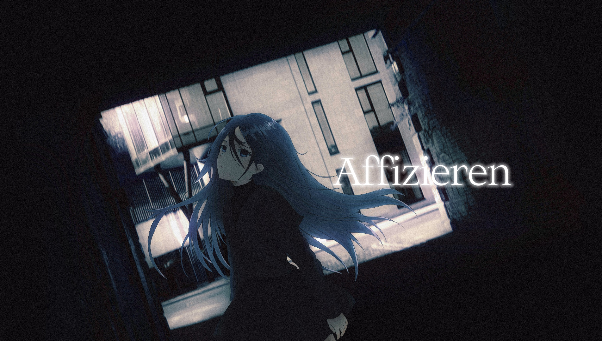

I'm an independent artist and music producer based in the UK. My music draws on progressive metalcore, Japanese rock, synthesized vocals and personal narratives. I approach composition, arrangement, instrumental performance and production as parts of the same creative process.

Art by HazezZ
01
Affizieren
My most personal composition and the work that best represents my artistic identity. Mixed-meter passages, atmospheric guitars, slap bass, spoken word and progressive metalcore instrumentation trace the emotional aftermath of memory.
A fusion of melodic songwriting and progressive metalcore, built around a recurring vocal melody that moves through changing rhythmic arrangements, heavy riffs and contrasting instrumental textures.
A reflective composition centred on harmonic movement, layered clean and heavy guitars, and melodic development. The closing harmony recalls Ipomoea alba, connecting the piece to a larger body of work.
I have been writing original music since the age of fourteen. My practice brings songwriting, arrangement, bass and guitar performance, recording and mixing together within a largely self-directed creative process. Across my works, recurring musical motifs and personal narratives connect individual songs into a broader artistic world.